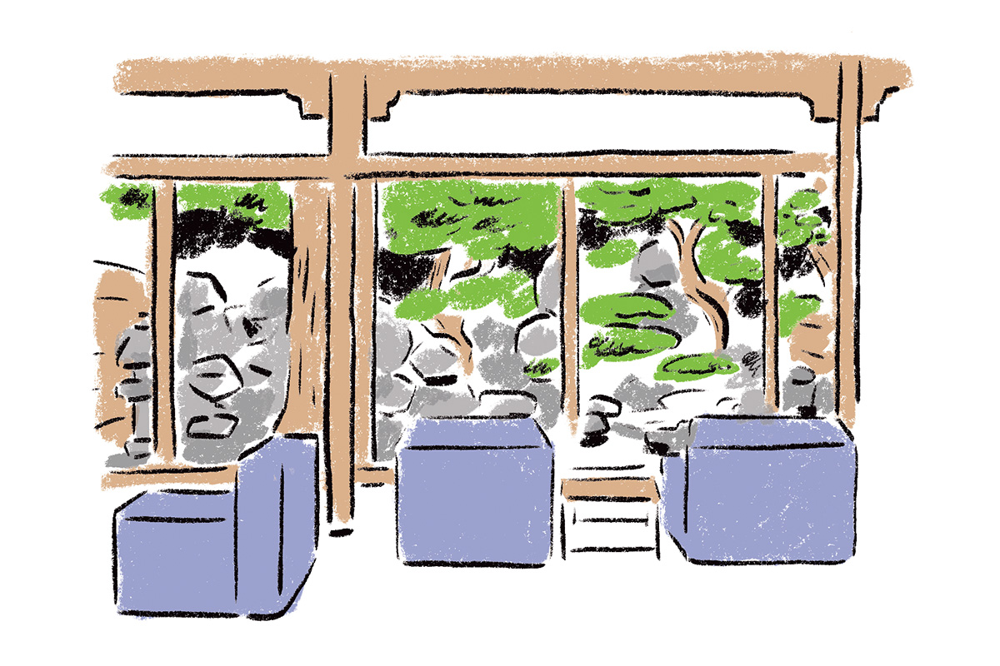
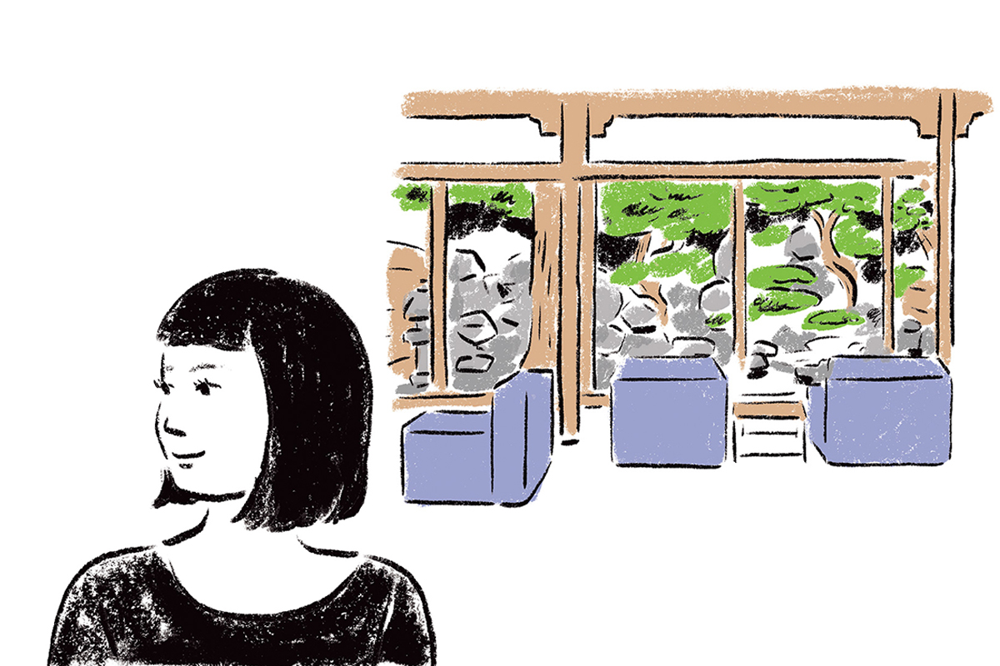
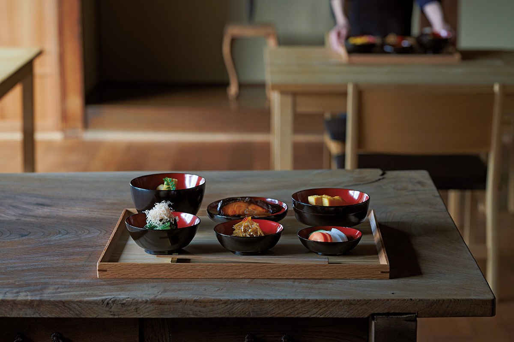

Префектура Нагано · Мацумото · еда
Мацумото ради завтрака: четыре дня с шефом, который ищет вкус в дороге

Есть путешественники, которые выбирают город по музеям, а есть те, кто выбирает его по завтраку. Шеф и автор кулинарного проекта «Моногатари сёкудо» рассказывает, как провести в Мацумото четыре дня ради завтраков.
Маршрут
Путешествие ради завтрака
Автор этого маршрута работает фуд-директором и шеф-поваром ресторана в Камакуре, а в проекте «Моногатари сёкудо» придумывает обеды по мотивам сказок, романов и фильмов. Её главное увлечение это поездки, связанные с едой: в каждом новом месте она первым делом ищет, что там едят.

На этот раз цель путешествия город Мацумото в префектуре Нагано. Говорят, ночи здесь такие прохладные, что кондиционер не нужен даже летом. Она едет на машине и по дороге то и дело сворачивает в сторону.
ninjinsan: лавка старых вещей у озера Сува
Ещё одну остановку она ни за что не пропустит. В Симосуве, городке на берегу озера Сува, работает лавка старых вещей ninjinsan, которую она называет страной чудес. Для тех, кто любит старые вещи, это сокровищница. Ценники написаны от руки и с любовью, и по ним сразу понятно, какой человек хозяин. В прошлый раз она увезла отсюда глиняный горшок, чтобы варить рис на одну порцию, рисовую чашку и лакированную миску для супа. Время в ninjinsan летит незаметно, и это, по её словам, лучшее оправдание для опоздания.
ninjinsan
- Адрес
- префектура Нагано, уезд Сува, Симосува, Мита-мати, 3190-14
- Телефон
- +81 70-1456-2223
- Часы работы
- 13:00–19:00
- Выходные
- вторник и среда
Вечер
Отель в центре и два бара
Ночевать в первый вечер она советует в Matsumoto Hotel Kagetsu. Отель стоит в центре города, поэтому можно спокойно обойти несколько хороших заведений и не думать, как добраться обратно.
Matsumoto Hotel Kagetsu
- Адрес
- префектура Нагано, Мацумото, Отэ, 4-8-9
- Телефон
- +81 263-32-0114
- Цены / Вход
- от 20 350 иен за ночь с ужином и завтраком (налог и сервисный сбор включены)
Первая остановка в peg, баре с натуральными винами. Здесь делают собственную шаркютери, а фирменное блюдо это «пег-дог», хот-дог, который подают только до 15:00. Но больше всего автор советует омлет, который подают только вечером. Он простой, нежный, с насыщенным сливочным вкусом, и под него хорошо идёт вино.
peg
- Адрес
- префектура Нагано, Мацумото, Тюо, 3-3-11
- Телефон
- +81 263-88-9199
- Часы работы
- 12:00–17:00, 18:00–23:00
- Выходные
- воскресенье и понедельник
После пары бокалов она идёт в одэн-закусочную «Торо», где всего семь мест за стойкой и всегда полно местных. Стоит попробовать нэримоно, изделия из рыбного фарша, в которые хозяин вкладывает много сил. Каждую можно заказать жареной или в обычном виде, так что одну и ту же начинку пробуешь дважды. Солоноватый бульон приятно согревает и словно расходится по всему телу.
«Торо»
- Адрес
- префектура Нагано, Мацумото, Тюо, 1-5-11
- Телефон
- +81 263-36-4146
- Часы работы
- 17:30–23:00
- Выходные
- среда
Утро
Завтрак, заварные пирожные и кофе
Наутро она медленно идёт пешком в «Арупусу гохан». Здесь подают бережный к телу и душе завтрак из выращенных на природе овощей и приправ из окрестностей Мацумото. С каждой ложкой чувствуешь, как организм понемногу просыпается.
«Арупусу гохан»
- Адрес
- префектура Нагано, Мацумото, Фукаси, 3-7-5
- Телефон
- +81 263-87-5377
- Часы работы
- 8:00–9:30 (последний заказ), 11:30–14:30 (последний заказ)
- Выходные
- с понедельника по среду
Дальше путь лежит в главный магазин кондитерской «Масамура». Здесь берут маленькие заварные пирожные, по две штуки на человека, а в подарок покупают печенье «Тэнсю исигаки», названное в честь каменных стен замка. В кафе sioribi по соседству можно взять кофе и чай с пряностями навынос и гулять с ними по улице, где стоят дома со стенами в узор из белых швов по тёмной плитке. Пирожные простые, но сладость у них такая приятная, что второе оказывается очень кстати.
«Масамура», главный магазин
- Адрес
- префектура Нагано, Мацумото, Фукаси, 2-5-24
- Телефон
- +81 263-33-2544
- Часы работы
- 9:00–18:00
- Выходные
- вторник
sioribi
- Адрес
- префектура Нагано, Мацумото, Фукаси, 3-7-8
- Телефон
- +81 263-50-5967
- Часы работы
- 7:00–20:00
- Выходные
- среда
- Сайт
- sioribi.jp
Плато
Ночь над облаками
Из города дорога поднимается на плато Уцукусигахара, на высоту больше 2000 метров. Цель этого дня отель «Огато» на вершине плато. Отсюда видно звёздное небо, при удаче море облаков внизу, а ещё закат и рассвет: в Японии немного мест, где можно увидеть и то и другое.
В кафе при отеле стоит попробовать говяжье рагу, а потом отправиться в художественный музей под открытым небом на плато. По дороге встречаются пасущиеся коровы, а на башне «Уцукуси-но то» можно позвонить в колокол. Вернувшись в отель, обязательно закажите отдельную купальню: вид из неё такой широкий, что трудно поверить, будто это Япония.
Ужин здесь состоит из множества блюд из продуктов Синсю, к ним есть японское сакэ и японское вино. Подробности автор раскрывать не хочет, чтобы не испортить впечатление. По её словам, после первого раза сюда хочется вернуться в другое время года.
Отель «Огато»
- Адрес
- префектура Нагано, Мацумото, Ириямабэ, 8964
- Телефон
- +81 263-50-8765
- Цены / Вход
- от 19 800 иен за ночь с ужином и завтраком (налог и сервисный сбор включены)
- Сайт
- ougatou.jp
Художественный музей плато Уцукусигахара
- Адрес
- префектура Нагано, Уэда, Такэси-Камихон-ири, плато Уцукусигахара
- Телефон
- +81 268-86-2331
- Часы работы
- 9:00–17:00
- Сайт
- utsukushi-oam.jp
Город
Замок, рынок и угорь
На следующий день маршрут возвращается в Мацумото. С замка Мацумото открывается вид на город, а после можно погулять по старым кварталам у его стен. В 2022 году 16 и 17 июля на площади у бывших ворот Отэмон прошёл рынок «Мацумото фуруити»: туда съехались продавцы со всей префектуры и из других концов страны. Если ваша поездка совпадёт с одним из таких рынков, обязательно загляните.
«Мацумото фуруити»
- Адрес
- площадь на месте ворот Отэмон замка Мацумото
- Даты
- в 2022 году 16–17 июля
Обед в этот день в Yamasei, где готовят угря и мягкотелую черепаху. Автор заказывает жареную печень угря, угря на рисе в лакированной коробке (унадзю) и натуральное вино по совету заведения. Красное сербское вино с печенью угря дало сочетание, которое трудно описать словами. Вряд ли это вино, проделав такой путь до Японии, рассчитывало встретиться с угрём. Если бы в Мацумото можно было выбрать только одно заведение, она без колебаний выбрала бы это.
Yamasei
- Адрес
- префектура Нагано, Мацумото, Тюо, 1-2-20
- Телефон
- +81 263-88-6005
- Часы работы
- 12:00–14:00, 17:30–21:00 (в воскресенье только обед)
- Выходные
- понедельник
- Сайт
- yamasei-unagi.jp
Рёкан
Kanaukan: последний завтрак
Последняя ночь проходит в рёкане Kanaukan в онсэне Уцукусигахара. С порога кажется, что попал под действие волшебства: всё вокруг будто знакомо, хотя ты здесь впервые. Рёкану около ста лет, и его концепция звучит как «ночевать вместе со временем». Здание перестроили так, чтобы оно простояло ещё сто лет: в нём нет ничего лишнего, а продуманная красота почти незаметна.
За ужином удивляют продукты, сезон которых в Токио уже прошёл. Из-за высоты сезон каждого продукта наступает здесь позже, чем на равнине вокруг Токио. Когда встречаешь то, что уже не надеялся попробовать до следующего года, улыбка появляется сама собой.

Завтрак в последнее утро четырёхдневной поездки подают в лакированной посуде эпохи Мэйдзи (1868–1912), которую мастера покрыли лаком заново и тем самым вернули к жизни. Думаешь о тех, кто её сделал, медленно жуёшь, пробуешь каждый кусочек. Автор замечает: каждый день она делает то же самое, но здесь сама обстановка заставляет двигаться бережнее.
После завтрака в гостиной подают десерт, и можно ещё немного посидеть, глядя на сад. Напоследок загляните в сувенирный уголок: здесь продают посуду и приправы, которые используют в рёкане. Автор купила мисо, которое подавали к завтраку.
Kanaukan
- Адрес
- префектура Нагано, Мацумото, Сатоямабэ, 131-2
- Телефон
- +81 263-32-1922
- Цены / Вход
- от 22 150 иен за ночь с ужином и завтраком (налог и сервисный сбор включены)
- Сайт
- kanaukan.com
Дома
Завтрак из сувениров
Конец поездки всегда немного грустный, но привезённые вещи продлевают её. Вернувшись домой, автор готовит завтрак из того, что купила в дороге. Рис она варит в глиняном горшке из ninjinsan и раскладывает по чашке и лакированной миске оттуда же, а мисо-суп заправляет мисо из Kanaukan. Может быть, именно здесь, за домашним столом, и заканчивается путешествие в поисках вкусного завтрака.